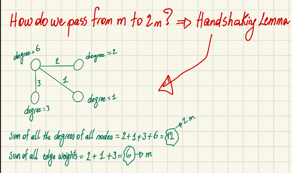
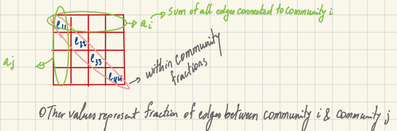

Understanding Modularity in Networks
After studying the Leiden Algorithm and the Louvain algorithm for community detection in graphs, where both algorithms try to optimize a score function which is the Modularity (or CPM in some cases), I was intrigued to deepen my readings on the Modularity function. Here it is in this blog post.
📖 You can read more about it in my previous post: Understanding the Leiden Clustering Algorithm.
Modularity tries to maximize the difference between the actual number of edges inside a community and the expected number of such edges.
Node-Level Perspective
[Insert screenshot of the graph diagram with node degrees from Page 1 here]
Modularity can be understood from a node-level perspective using the following equation:
$$Q = \frac{1}{2m} \sum_{i,j} \left( A_{ij} - \frac{k_i k_j}{2m} \right) \delta(c_i, c_j)$$
Let’s break down the components of this equation: * Aij (Reality): The actual edge weight between node i and node j. The aim of the algorithm is to evaluate these edge weights. * ki: The sum of edge weights connected to node i. A.K.A The degree of node i * $\frac{k_i k_j}{2m}$ (Random Null Model): The expected probability of a link existing between node i and node j if connections were completely random. * m: The actual total weights of all the unique edges in the network. * 2m: The total sum of degrees of all nodes.
The Kronecker Delta
The Kronecker delta function δ(ci, cj) ensures we only consider nodes within the same community:
$$\delta(c_i, c_j) = \begin{cases} 1 & \text{if } c_i = c_j \\ 0 & \text{if } c_i \neq c_j \end{cases}$$
Handshaking Lemma
How do we pass from m to 2m? The Handshaking Lemma states that the sum of all degrees of all nodes is twice the sum of all edge weights. For example, in a simple network:

* Sum of all edge weights = 6 → m * Sum of all node degrees = 12 → 2mThe Modularity Function: Comparing Reality to Expectation
The modularity function essentially compares reality to expectation.
- Reality: Aij is the actual connection weight between nodes i and j.
- Expectation: $\frac{k_i k_j}{2m}$ is the expected connection if all connections in the network were completely random. It asks: What is the probability of i and j being connected based solely on their degrees (i.e., their popularity)?
Deriving the Expected Probability
Imagine each degree a node has is a “half-edge” waiting to be connected to another node. Therefore, we will have a total of 2m half-edges (aka 2m degrees) in the network, where m is the total weight for all edges.
The probability of selecting a half-edge that belongs to node i is P(i) where ki is the nb of connections of node i:
$$P(i) = \frac{k_i}{2m}$$
Similarly, for node j:
$$P(j) = \frac{k_j}{2m}$$
Assuming independence (i.e., assuming that all edges are placed completely at random), the probability of one specific pair of nodes i and j connecting is the product of their individual probabilities:
$$P(i \cap j) = P(i) \times P(j) = \frac{k_i}{2m} \times \frac{k_j}{2m} = \frac{k_i k_j}{(2m)^2}$$
Conceptually: If you close your eyes and pick any connection, P(i ∩ j) is the probability that the first end of this connection will be i and the second end will be j.
For the whole network, since we have 2m total half-edges connecting, the expected number of edges between i and j is:
$$E[A_{ij}] = 2m \times P(i \cap j) = 2m \times \frac{k_i k_j}{(2m)^2} = \frac{k_i k_j}{2m}$$
Community Perspective (Macro View)
Modularity can also be calculated from a community perspective, which is generally faster to compute:
$$Q = \frac{1}{2m} \sum_{c} \left( e_c - \gamma \frac{K_c^2}{2m} \right)$$
Where: * ec: The total weight of all internal edges within community c. * $\frac{K_c^2}{2m}$: The expected number of internal edges in community c based on random chance. * γ: The resolution parameter.
Passing from Micro View to Macro View
How do we map the node-level variables to community-level variables? * Edges: Aij → ec ⇒ ec = ∑i, j ∈ cAij * Degrees: kikj = Kc2 * Kc = ∑i ∈ cki
* Kc2 = ∑i, j ∈ ckikj
Removing the Kronecker Delta: The micro view uses δ(ci, cj) to calculate modularity only for nodes inside the same community. Since the macro view inherently uses a sum over communities (∑c), the Kronecker delta is no longer needed.
The Resolution Parameter (γ)
The resolution parameter adjusts the size and number of the communities found: * If γ = 1: The macro equation yields the exact same results as the micro equation. * If γ > 1: This places a higher penalty on the random model, forcing the algorithm to find more communities. * If γ < 1: This places less penalty, resulting in fewer communities.
The Original Modularity Definition
In the original paper introducing Modularity, Finding and evaluating community structure in networks by Newman and Girvan, the authors defined it using fractions of edges:
Q = ∑i(eii − ai2) = Tr(e) − ||e2||
Where: * eij: The fraction of edges that link nodes in community i to community j. * eii: The fraction of edges that connect nodes within community i. Thus, ∑ieii represents the fraction of all within-community edges. * ai: The sum of all edge fractions connected to community i.
The values eij form a K × K symmetric matrix e, where K is the number of communities. The diagonal values (e.g., e11, e33) represent the fractions of within-community edges, while the other values represent the fractions of edges between community i and community j.
Matrix Example
Consider a matrix e:
$$e = \begin{bmatrix} 0.4 & 0.01 \\ 0.01 & 0.5 \end{bmatrix}$$
Assuming there are 10 total edges in the network: * 0.4 × 10 = 4 edges are internal to Community 1. * 0.5 × 10 = 5 edges are internal to Community 2. * 0.01 + 0.01 accounts for the 1 edge connecting both communities.

Analyzing the Original Equation
- Random Expectation (ai2): If edges were placed completely at random between community i and j, the expected fraction is aiaj (similar to the multiplication of two independent probabilities).
- By subtracting the random expectation (ai2) from the actual reality (eii) for every community, the formula calculates whether the internal connections are denser than a random distribution.
Comparing the Two Equations
The only difference between the original modularity equation and the generalized community equation is the resolution parameter (γ):
Q = ∑i(eii − ai2)
$$Q = \frac{1}{2m} \sum_c \left( e_c - \gamma \frac{K_c^2}{2m} \right)$$
If γ = 1, the two equations are exactly the same. I will let you do the math!